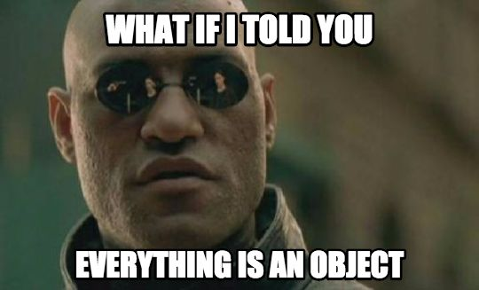
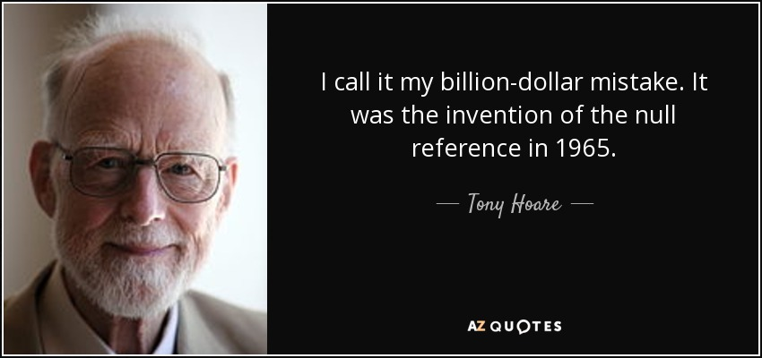

class: center, middle # Hello Kotlin, Farewell Java  Technozaure Bordeaux - 6 octobre 2017 --- # Agenda 1. A brief history 2. Why ? 3. Object 4. Val vs Var 5. Type inference 6. To be null or not to be null ? 7. Smart type checks 8. The case for when 9. DTO 10. Wow more such very goodies 11. Fun, Fun, Fun 12. Conclusion --- # A brief history  --- # A brief history <img src="images/jetbrains.png" alt="Jetbrains logo" width="200" height="200"> * Development started in 2010 * Officially announced in 2011 * Endorsed by Google in 2017 --- # Why ? --- # Why ? * For Jetbrains internal use * Adopted by Android community * What Java should have been --- # Object  --- # Val vs Var ```kotlin fun main(args: Array<String>) { val s: String = "Hello, Kotlin" s = "Farewell, Java" // compile error println(s) var n: Int = 1 n += 1 println(n) // 2 val arr: Array<Int> = Array(5) { it } arr[1] = 0 arr.forEach { print("$it ") } // 0 0 2 3 4 } ``` --- # Type inference ```kotlin val s = "Hello, Kotlin" // String is inferred val n = 2 // Int is inferred fun add(a: Int, b: Int): Int = a + b val sum = add(1, 2) // Int is inferred ``` Rule of thumb 👍 Use type in `fun` declaration, not necessarily in variable declaration. --- # To be null or not to be null ?  --- # To be null or not to be null ? ```kotlin val s: String = null // compile error val s2: String? = null // OK println(s2.length) // compile error println(s2!!.length) // 😈 if (s2 != null) println(s3.length) // OK, smart cast as String if (s2 != null && s2.length > 0) println("non-empty string") // OK too ``` --- # Smart type checks ```kotlin val obj = gimme() if (obj is String) println("$obj has ${obj.length} characters") if (obj !is String) println("Not a string 😞") // could have been !(obj is string) else println(obj.length) fun gimme(): Any = when (ThreadLocalRandom.current().nextBoolean()) { true -> "Hello, Kotlin" false -> 1 } ``` --- # The case for when ```kotlin val x: Any = 1 when (x) { 0, 1 -> print("x is 0 or 1") is String -> print("x is a String") else -> println("🤔") } // when as an expression val isBigNumber = when { n < 100 -> false n >= 100 -> true else -> println("🤔") } // compiler can detect if else branch is needed val b = when (ThreadLocalRandom.current().nextBoolean()) { false -> 0 true -> 1 else -> -1 // unneeded } ``` --- # DTO ```java import java.util.Objects; public class User { private final String login; private final String password; public User(String login, String password) {...} public String getLogin() {...} public String getPassword() {...} @Override public String toString() {...} @Override public boolean equals(Object o) {...} @Override public int hashCode() {...} // 41 lines ! } ``` ```kotlin data class User(val login, val password) ``` --- # Wow more such very goodies #### Extensions function ```kotlin fun Int.isEven() = this % 2 == 0 println(1.isEven()) ``` #### Destructuration ```kotlin val (x, y) = randomPair() println("$x - $y") fun randomPair(): Pair<Int, Int> { fun nextRandomInt() = ThreadLocalRandom.current().nextInt() // nested function return Pair(nextRandomInt(), nextRandomInt()) } ``` #### Type alias ```kotlin typealias Users = List<User> ``` --- # Wow more such very goodies #### Ranges ```kotlin val countdown = 10 downTo 0 for (n in countdown) println(n) ``` #### Safe calls ```kotlin val s: String? = string() val length: Int? = s?.length // length or null println(user?.login?.length) // can be chained ``` #### Elvis operator ```kotlin val length: Int = s?.length ?: 0 println(user?.login?.length ?: throw NullPointerException()) ``` #### Infix functions ```kotlin infix fun Int.inc(n: Int) = this + n println(10 inc 2) ``` --- # Wow more such very goodies #### Default arguments ```kotlin @JvmOverloads fun add(a: Int, b: Int = 1) = a + b add(1, 2) // 3 add(1) // 2 ``` #### Named arguments ```kotlin println(add(b = 2, a = 1)) ``` #### Interoperability ```java public class Interop { public static void main(String[] args) { System.out.println(MathsKt.add(1, 2)); System.out.println(MathsKt.add(1)); } } ``` --- # Fun, Fun, Fun Go, go, go workshop ! **TODO** ajouter l'url du workshop sur Tech.io --- class: center, middle # Conclusion --- # Resources * [Kotlin Reference](https://kotlinlang.org/docs/reference/) * [Try Kotlin](https://try.kotl.in/) * [Awesome Kotlin](https://github.com/KotlinBy/awesome-kotlin) * [Kotlin in Action](https://www.manning.com/books/kotlin-in-action)